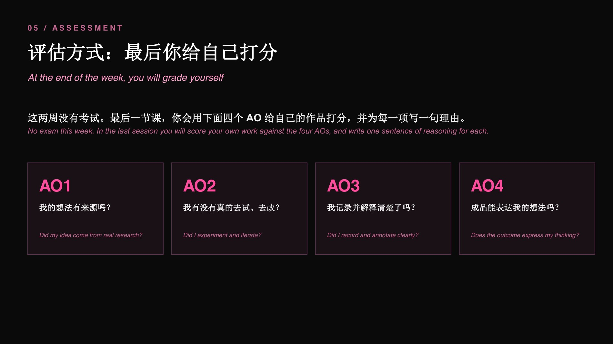
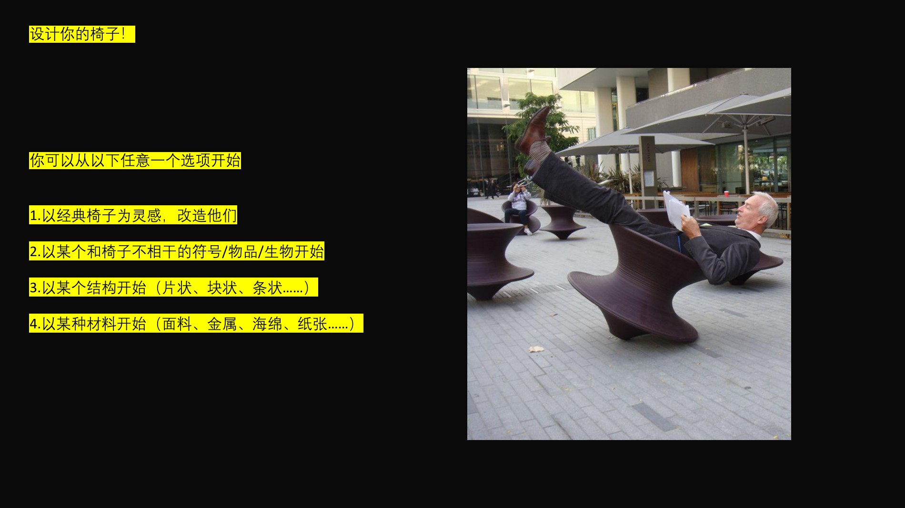
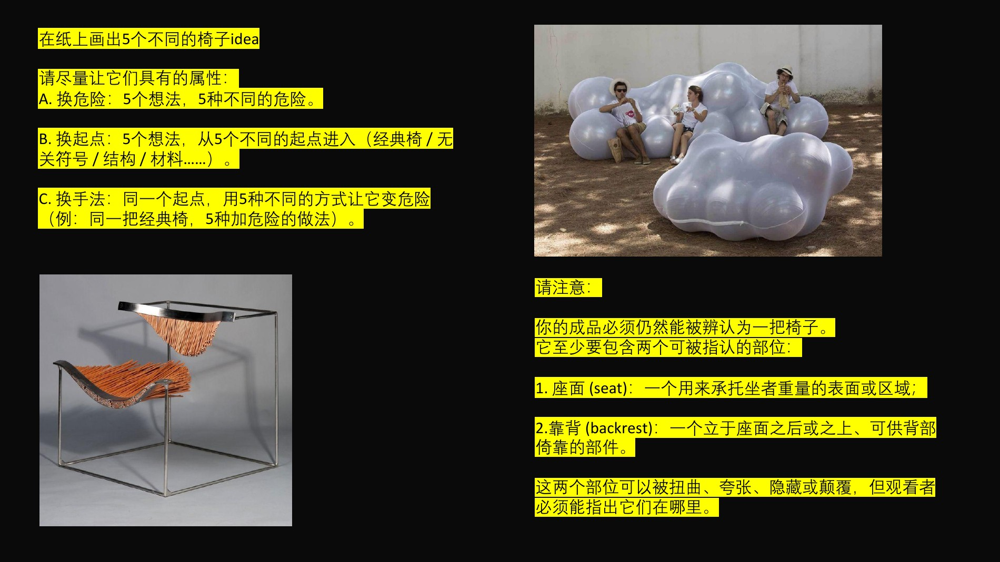
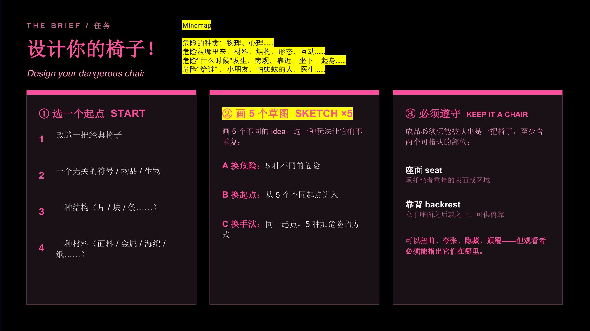

一把危险的椅子
这套艺术与设计衔接课程以“危险的椅子”为共同主题。参与者从一个熟悉的物件出发，改变它的结构、材料或情境，随后将作品交给不同媒介继续发展，最后用说明书或 zine 讲清构想。
课程先从现成底座和椅子制作展开，再与服装环节衔接，通过穿戴或包裹改变作品，最后以平面说明书或 zine 表达。每次转换都要求参与者重新解释作品的对象、用途和观看方式。









这套艺术与设计衔接课程以“危险的椅子”为共同主题。参与者从一个熟悉的物件出发，改变它的结构、材料或情境，随后将作品交给不同媒介继续发展，最后用说明书或 zine 讲清构想。
课程先从现成底座和椅子制作展开，再与服装环节衔接，通过穿戴或包裹改变作品，最后以平面说明书或 zine 表达。每次转换都要求参与者重新解释作品的对象、用途和观看方式。



